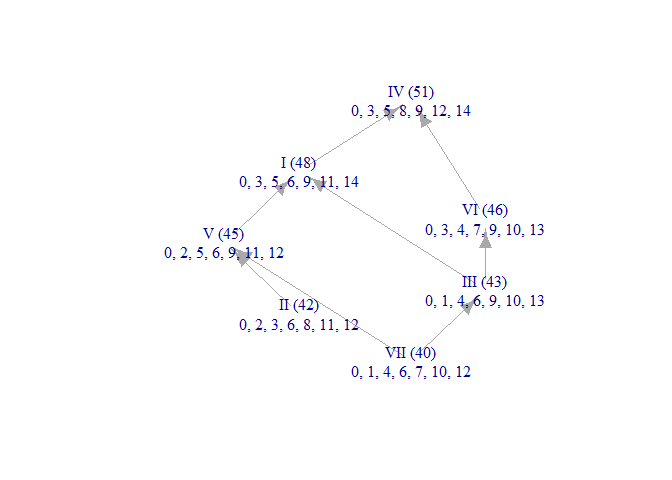

The “MCT” in musicMCT stands for Modal Color Theory, a theory of musical scale structure developed by Paul Sherrill, “Modal Color Theory,” Journal of Music Theory 69/1 (2025): 1-49. The goal of this package is to give musicians and music scholars computational tools that make it easier to work with this theory. In a nutshell, Modal Color Theory models musical scales as points in a geometry. The locations of those points relative to various hyperplane arrangements tell us a lot about the scales’ internal structures and mutual relationships. The shape of those hyperplane arrangements gets pretty complex: for the important case of seven-note scales, the main arrangement has 42 hyperplanes in a 6-dimensional space! Computational tools are therefore very helpful.
If you’ve ever wondered why a piece of music uses one scale rather than another; if you want to know more about the jazz chord-scale concept of lydian being “bright” and locrian being “dark”; if you’ve ever wanted to design your own microtonal scale from scratch; if you’re a theorist who wants a geometrical perspective on concepts like voice leading and maximal evenness; if you’re an ethnomusicologist looking to interpret tuning data: musicMCT might be useful to you!
Installation
You can install the latest released version of musicMCT from CRAN with:
install.packages("musicMCT")Alternatively, you can install the development version of musicMCT from GitHub with:
install.packages("remotes")
remotes::install_github("satbq/musicMCT")In addition to the package itself, you will probably want to use the following large files which contain data about the MCT geometries:
- representative_scales.rds (~80 MB) contains a list of all scalar colors for scales of 2-7 notes, with one concrete scale to represent each color
- representative_signvectors.rds (~10 MB) contains a list of their corresponding sign vectors
- color_adjacencies.rds (~130 MB) contains information about the adjacency relationships between all these colors (in the form of an adjacency list)
Download these files, save them to your working directory, and load them with:
Example
For a detailed introduction to using this package, please see the introductory vignette.
As a very quick example, let’s define the most common “just intonation” version of the major scale and run a few tests on it:
library(musicMCT)
just_dia_frequency_ratios <- c(1, 9/8, 5/4, 4/3, 3/2, 5/3, 15/8)
just_dia <- 12 * log2(just_dia_frequency_ratios)
# This definition of the just diatonic explicitly derives it from the
# frequency ratios, which I've done to model that process for you. However,
# musicMCT also has a convenience function that will give us the
# same result much faster: try out j(dia) or j(1,2,3,4,5,6,7) for yourself.
# The modes of the scale are displayed as the columns in this matrix:
sim(just_dia)
#> [,1] [,2] [,3] [,4] [,5] [,6] [,7]
#> [1,] 0.000000 0.000000 0.000000 0.000000 0.000000 0.000000 0.000000
#> [2,] 2.039100 1.824037 1.117313 2.039100 1.824037 2.039100 1.117313
#> [3,] 3.863137 2.941350 3.156413 3.863137 3.863137 3.156413 3.156413
#> [4,] 4.980450 4.980450 4.980450 5.902237 4.980450 5.195513 4.980450
#> [5,] 7.019550 6.804487 7.019550 7.019550 7.019550 7.019550 6.097763
#> [6,] 8.843587 8.843587 8.136863 9.058650 8.843587 8.136863 8.136863
#> [7,] 10.882687 9.960900 10.175963 10.882687 9.960900 10.175963 9.960900
# A few pieces of evidence that the scale is "pairwise well-formed":
asword(just_dia)
#> [1] 3 2 1 3 2 3 1
howfree(just_dia)
#> [1] 2
isgwf(just_dia)
#> [1] TRUE
# A 15 equal-tempered approximation of just-dia which preserves its "color":
quantized_just_dia <- quantize_color(just_dia)
print(quantized_just_dia)
#> $set
#> [1] 0 3 5 6 9 11 14
#>
#> $edo
#> [1] 15
# Finally, let's see a rough brightness graph for the scale. (R can assemble the
# necessary information, but musicMCT doesn't yet make the graphs pretty!)
brightnessgraph(quantized_just_dia$set, edo=quantized_just_dia$edo)